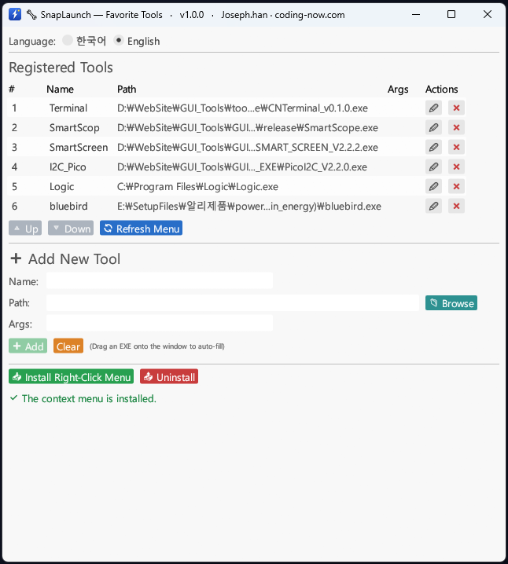

윈도우 바탕화면 우클릭에 자주 쓰는 프로그램 즐겨찾기 메뉴를 추가하는
포터블 · 단일 EXE · 한국어/English 지원 · 관리자 권한 불필요
아래 영역에서 우클릭 → "자주사용하는 툴" → 등록한 앱 클릭의 흐름이 12초 주기로 반복됩니다.
툴 추가/편집/순서변경, 한·영 전환, 메뉴 설치/제거 모두 한 창에서. 변경된 행은 옅은 파랑, 죽은 경로는 빨강으로 즉시 표시됩니다.

매 클릭마다 의도가 한눈에 보이도록 색·강조·툴팁을 세심하게 분리했습니다.
3.4 MB Rust 빌드. 설치 과정 없음, USB 에 담아 옮겨도 동작.
HKEY_CURRENT_USER 만 사용. 회사 PC 에서도 안전하게 설치 가능.
GUI 라디오로 즉시 전환. 우클릭 메뉴 텍스트도 같이 따라옴.
녹(주요), 빨(파괴), 파(동기화), 슬레이트, 틸, 앰버 — 헷갈리지 않게.
추가/편집/이동한 행이 옅은 파랑 ● 으로 표시 → 메뉴 갱신 시 클리어.
등록한 EXE 가 사라지면 빨갛게 표시. 메뉴 클릭 시 자동으로 제거 제안.
버튼·필드·라디오 위에 호버하면 한/영으로 설명. PATH 검색 힌트까지.
설치 시 EXE 옆에 자동 생성. snap-launch.exe 가 삭제돼도 메뉴 정리 가능.
모든 색은 src/ui/style.rs 한 곳에서 관리됩니다.
압축 해제도, 설치 마법사도 없습니다.
C:\Tools\SnapLaunch\) 에 둔다.